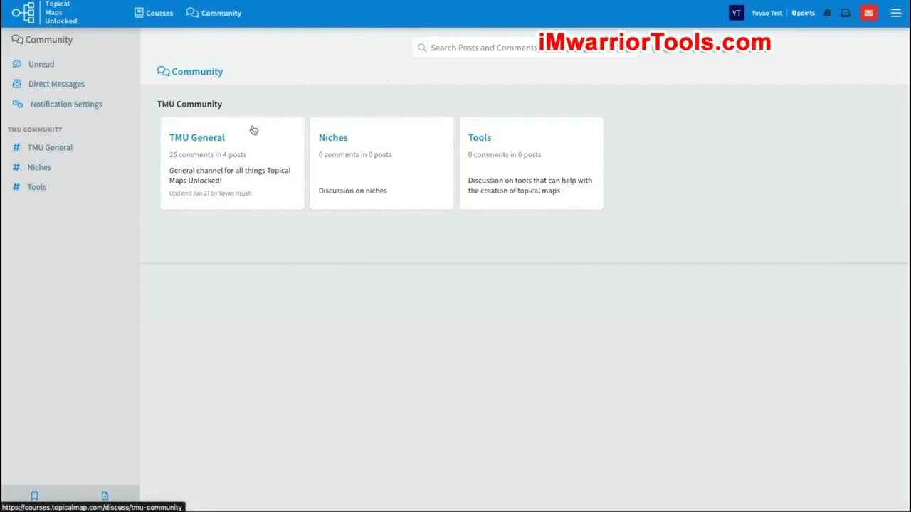
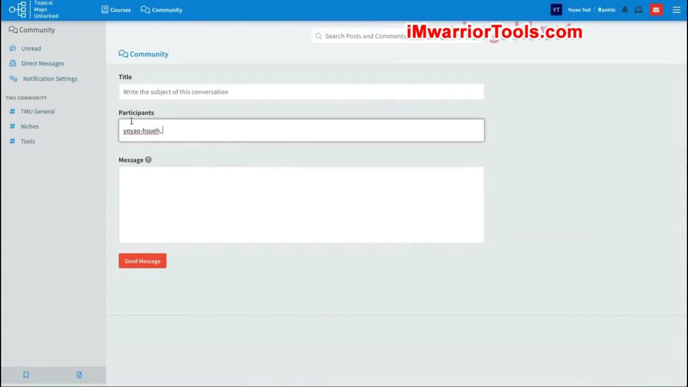
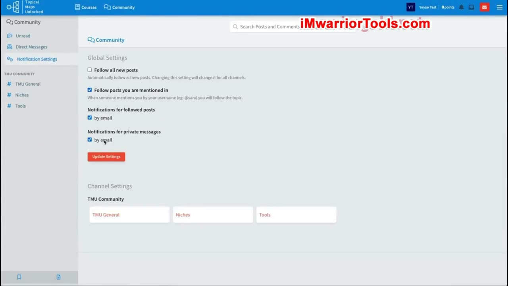

How to Join the Private Group
1. Cộng đồng dành cho học viên và ba kênh trao đổi
Khóa học có một cộng đồng Topical Maps Unlocked dành cho tất cả học viên. Trong giao diện được giới thiệu, cộng đồng có ba kênh: TMU General, Niches và Tools. Đây là nơi người học có thể thảo luận, đặt câu hỏi và trao đổi với những người khác cùng học.
TMU General là kênh chung cho các vấn đề liên quan đến khóa học hoặc Topical map nói chung. Niches dành cho trao đổi về từng niche, tức thị trường ngách. Yoyao đưa ra một ví dụ câu hỏi: Topical map cho niche Home improvement, hay cải thiện nhà cửa, có thể lớn tới mức nào? Có thể một thành viên đã từng làm và có thể chia sẻ kinh nghiệm với người đang hỏi.
Tools là kênh thảo luận các công cụ có thể giúp tạo Topical map, như phần mô tả kênh trên giao diện thể hiện. Nhìn chung, người học có thể tìm lời khuyên từ nhau về công cụ và những vấn đề phát sinh trong quá trình xây dựng bản đồ, chứ không chỉ đọc nội dung bài học một chiều.

2. Mở bài đăng, đọc thảo luận và gửi phản hồi
Khi vào một kênh, bạn sẽ thấy các bài đăng mà người hướng dẫn đã tạo sẵn. Để xem đầy đủ nội dung và để lại bình luận, hãy nhấp vào tiêu đề bài đăng rồi cuộn xuống phần phản hồi. Từ đó, bạn có thể đưa ra nhận xét của mình trong đúng cuộc thảo luận.
Phản hồi không chỉ giới hạn ở văn bản. Nếu cần minh họa vấn đề, bạn có thể đính kèm hình ảnh cùng với câu trả lời hoặc câu hỏi. Cách thao tác được giới thiệu là đi từ danh sách bài đăng tới nội dung chi tiết rồi tới phần bình luận phía dưới.
3. Unread và cách tạo Direct message
Mục Unread là nơi hiển thị những thông báo chưa đọc. Direct Messages tập hợp các tin nhắn trực tiếp từ mọi người. Ngoài việc xem tin nhắn đã nhận, bạn cũng có thể tự tạo một Direct message mới để liên hệ với một người cụ thể.
Trong biểu mẫu gửi tin, bạn nhập tên người muốn liên hệ ở trường Participants, đặt tiêu đề tại Title và viết nội dung tại Message. Yoyao dùng chính mình làm ví dụ người nhận: bắt đầu nhập tên của ông, chọn người nhận tương ứng rồi điền tin nhắn. Giao diện có nút Send Message để gửi nội dung đã soạn.

4. Cài đặt thông báo chung và thông báo theo kênh
Trong Notification Settings, bạn có thể thiết lập theo dõi bài đăng và nhận thông báo qua email. Giao diện phần Global Settings thể hiện các lựa chọn theo dõi tất cả bài mới, theo dõi bài có nhắc tới bạn, nhận email cho các bài đang theo dõi và cho các tin nhắn riêng.
Ngoài cài đặt chung, hệ thống còn có Channel Settings để chọn thiết lập cho từng kênh cụ thể. Khi mở một kênh, bạn có thể điều chỉnh việc theo dõi và nhận thông báo riêng của kênh đó. Bài học giới thiệu cả hai mức cài đặt, giúp bạn biết nơi quản lý thông báo chung và nơi quản lý thông báo theo kênh.

5. Vì sao nên hỏi trong diễn đàn của khóa học
Cộng đồng là nơi bạn có thể đặt những câu hỏi của mình. Yoyao lưu ý rằng nếu gửi email riêng cho ông, có thể bạn sẽ không nhận được phản hồi nhanh. Ông sẽ cố gắng hoạt động nhiều hơn trên diễn đàn thay vì xử lý mọi trao đổi qua email.
Lý do là có những câu hỏi và câu trả lời có thể giúp được nhiều người. Bằng cách ưu tiên trả lời trong cộng đồng, ông có thể hỗ trợ nhiều học viên cùng lúc. Phần giới thiệu cộng đồng riêng tư kết thúc bằng định hướng đó: sử dụng không gian chung để học hỏi và trao đổi những vấn đề có ích cho nhiều thành viên.
Tài liệu kèm bài: nhóm Facebook riêng tư
Tài liệu PDF kèm bài bổ sung một kênh khác: nhóm Facebook riêng tư Topical Maps Unlocked (Members), tại địa chỉ https://www.facebook.com/groups/838135268469491/. Tài liệu phân biệt cách sử dụng hai không gian: cộng đồng trên nền tảng khóa học phù hợp với những bài đăng và phản hồi đầy đủ, còn Facebook thuận tiện cho các câu hỏi nhanh, kết nối và cộng tác với những thành viên khác. Đây là phần bổ sung của tài liệu kèm bài, tách với phần hướng dẫn giao diện cộng đồng ở trên.
Nguồn và liên kết
- Topical Maps Unlocked 2.0 · How to Join the Private Group, bài học và tài liệu PDF cùng tên.